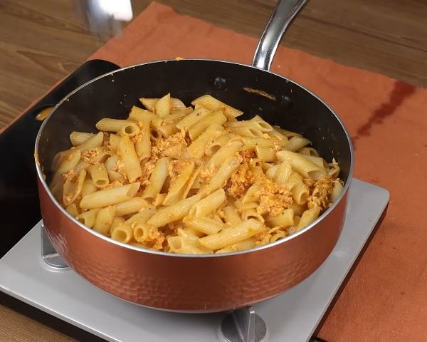

Pasta Loca

Ingredientes
- 1 litro de agua caliente
- 1 cucharadita de sal
- 1 cucharadita de aceite
- 300 g de pasta
- 4 cucharadas de aceite
- 1 cucharada de margarina
- 2 cucharadas de extracto de tomate
- 1 cucharadita de sal
- 1 cucharadita de pimienta negra
- 1 cucharadita de tinte
- 1 cucharadita de perejil
- 4 huevos
Preparación
- Poner a calentar 1 litro de agua en una olla
- Agregar 1 cucharadita de sal
- Agregar 1 cucharadita de aceite
- Cuando el agua esté hirviendo, agregar 300 g de pasta y cocer durante 7 minutos
- Luego, calentar una sarten y poner 4 cucharadas de aceite
- Agregar 1 cucharada de margarina
- Agregar 2 cucharadas de extracto de tomate
- Agregar 1 cucharadita de sal
- Agregar 1 cucharadita de pimienta negra
- Agregar 1 cucharadita de tinte
- Agregar 1 cucharadita de perejil y mezclar bien
- Luego agregar 4 huevos y seguir mezclando hasta que la salsa se endurezca un poco
- Finalmente agregar la pasta que preparamos en la olla y mezclar ligeramente todo
- Disfrutar
Ir a la página principal